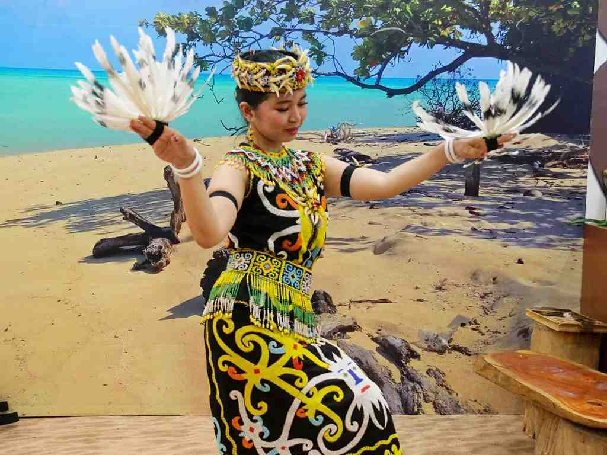
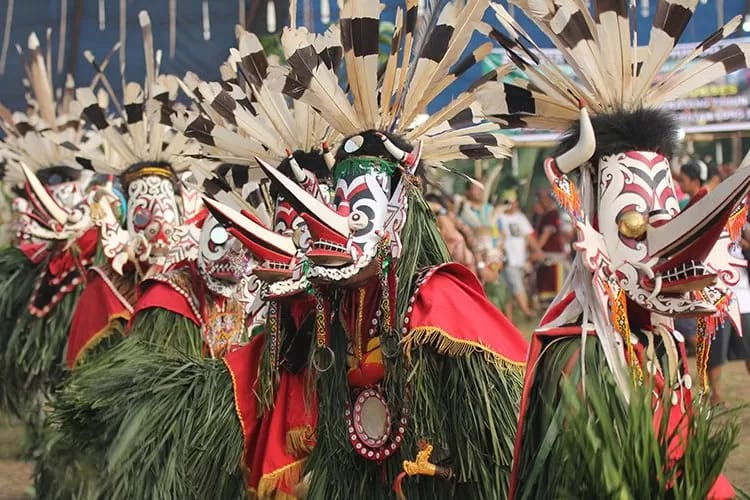

Tari Enggang: Keanggunan Simbol Dewata
Tari Enggang (Tari Burung Rangkong) adalah tarian tradisional Suku Dayak Kenyah. Gerakannya yang anggun meniru gerakan burung Enggang Gading yang dianggap suci dan sebagai perwujudan roh leluhur yang melambangkan kebesaran dan kepahlawanan.
Analisis Gerakan (Filosofi)
Gerakan utama meliputi:
- Ngajak: Gerakan awal menyambut roh.
- Ngelewai: Gerakan berjalan lambat dan anggun, menunjukkan kelembutan dan kesucian.
- Ngasai: Gerakan mengepakkan sayap yang menggambarkan Enggang terbang tinggi menuju dunia atas.
Tari Hudoq: Ritual Roh Pelindung Pertanian
Tari Hudoq adalah tarian ritual yang sangat penting dalam siklus pertanian Suku Dayak, khususnya Kenyah, Bahau, dan Modang. Tarian ini dilakukan untuk memohon perlindungan dari roh jahat dan meminta kesuburan hasil panen.
Mengenal Topeng Hudoq
Topeng Hudoq terbuat dari kayu yang diukir menyerupai hewan buas, atau roh-roh leluhur. Setiap topeng memiliki makna tersendiri, melambangkan kekuatan alam yang diundang untuk melindungi ladang dari hama dan kegagalan panen. Tarian ini penuh energi, dengan hentakan kaki yang menggambarkan proses menanam benih.
Sape': Melodi Abadi dari Jantung Borneo
Sape' adalah alat musik petik tradisional Suku Dayak, sering disebut sebagai "kecapi Borneo". Alat musik ini memiliki melodi yang khas, seringkali lembut, repetitif, dan meditatif, digunakan untuk mengiringi tarian maupun upacara penyembuhan.

Dukung Pelestarian Budaya
Seni tradisional ini menghadapi tantangan modernisasi. Dukungan kita sangat penting untuk memastikan Tari Enggang, Hudoq, dan alunan Sape' terus diwariskan kepada generasi mendatang.
Kunjungi Situs Konservasi Budaya Dayak